Мавзу: Дрон қийматларини дастурий таъминотда қайта ишлаш
Reja.
1. Agisoft photo scane dasturi xaqida ma`lumotlar
2. Agisoft photo scane dasturini yuklab olish va o`rnatish
3. Agisoft photo scane dasturini aktivlashtirish
4. Agisoft photo scane dasturida ishlash
Agisoft PhotoScan - bu professional 3D-model yaratishga yo'naltirilgan zamonaviy
asoslangan yechim sanalib, harakatsiz tasvirlardan sifatli 3D kontent. Eng ko'p o'lchamli 3D
rekonstruktsiya texnologiyasiga asoslanib, u tasodifiy tasvirlar bilan ishlaydi hamda
nazorat qilinadigan va nazoratsiz sharoitda samarali hisoblanadi. Rasmlar rekonstruksiya
qilinadigan ob'ekt kamida ikkita fotosuratda bo`lishi hsart. Har ikkala rasmni moslashtirish
va 3D modelni qayta tiklash to'liq avtomatlashtirilgan.
Agisoft photo scane dasturi asosan rastrlarni qoplanishini amalga oshirish orqali uch
o`lchamli modellar yaratish mumkin. Dastur qoplangan rastrlardan nuqtalarning bulutli
tasvirini hosil qiladi. Hosil bo`lgan bulutli nuqtalari birlashtiriladi. Natijada sirt hosil
bo`ladi. So`ngra sirtga tekstura beriladi. Shu tariqa uch o`lchamli modellar yaratiladi.
Minimal konfiguratsiya talabi
• Windows XP yoki undan keyingi versiyalar (32 yoki 64 bit), Mac OS X Lioni yoki undan
keyin, GLIBC bilan Debian / Ubuntu
2.13+ (64 bit)
• Intel Core 2 Duo protsessori yoki unga o'xshash
• 4 Gbayt RAM
Tavsiya etilgan konfiguratsiya
• Windows 7 SP 1 yoki undan keyingi versiyasi (64 bit), Mac OS X, GLIBC 2.13+ bilan
Debian /
Ubuntu (64 bit)
• Intel Core i7 protsessori
• 16 GB of RAM
PhotoScan tomonidan ishlov berish mumkin bo'lgan fotosuratlar soni mavjud RAMga bog'liq
ishlatiladigan rekonstruksiya parametrlari. Agar bitta fotosurat o'lchamlari 10 MPix, 4 Gb
ga teng bo'lsa RAM 30 dan 50 tagacha rasmga asoslangan modelni yaratish uchun etarli. 16
Gbayt operativ xotirada 300-400 fotosuratni ishlashga imkon beradi.
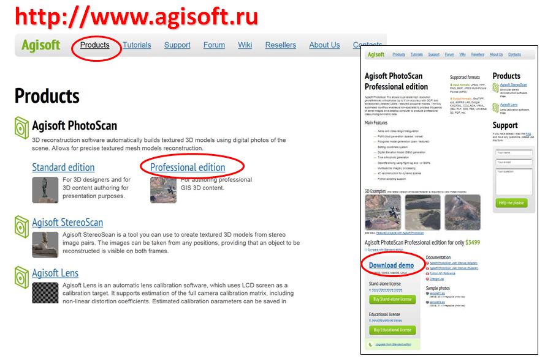
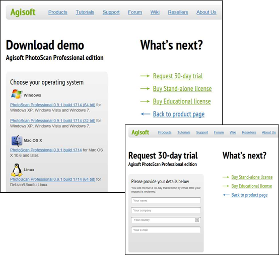
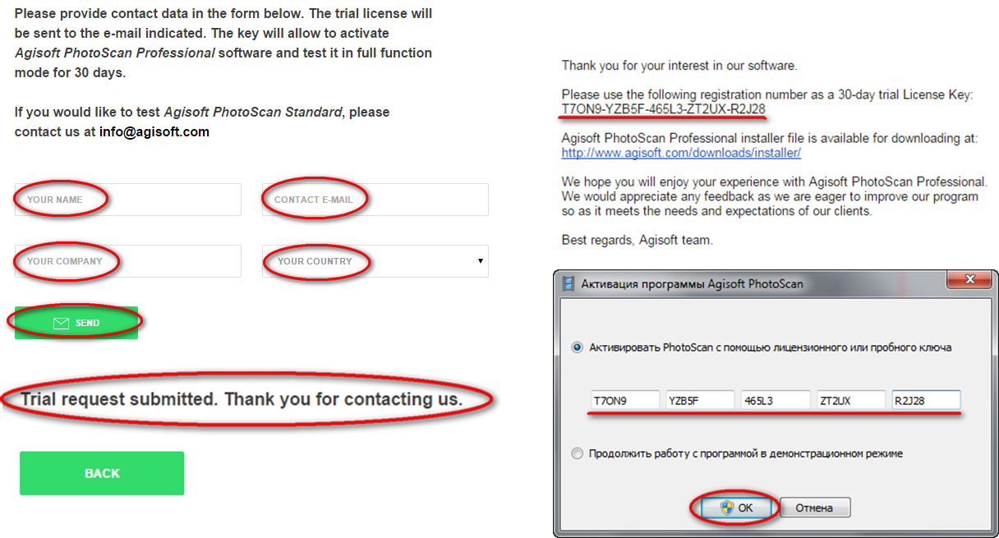
Agisoft photo scane dasturi ishga tushurilgach. Dobavit fotografiya buyrug`i bosiladi.
Natijada hosil bo`lgan darchadan kerakli rastrlar belgilanadi va rastrlar yuklab olinadi.
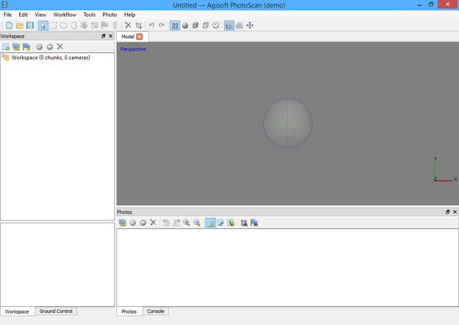
3D modelini yaratish jarayoni
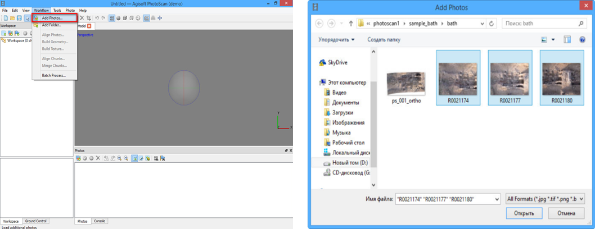
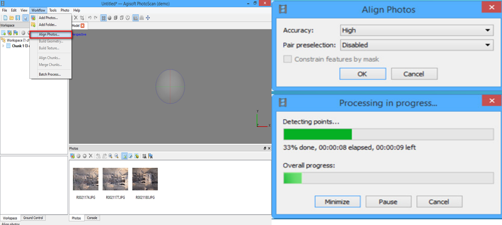
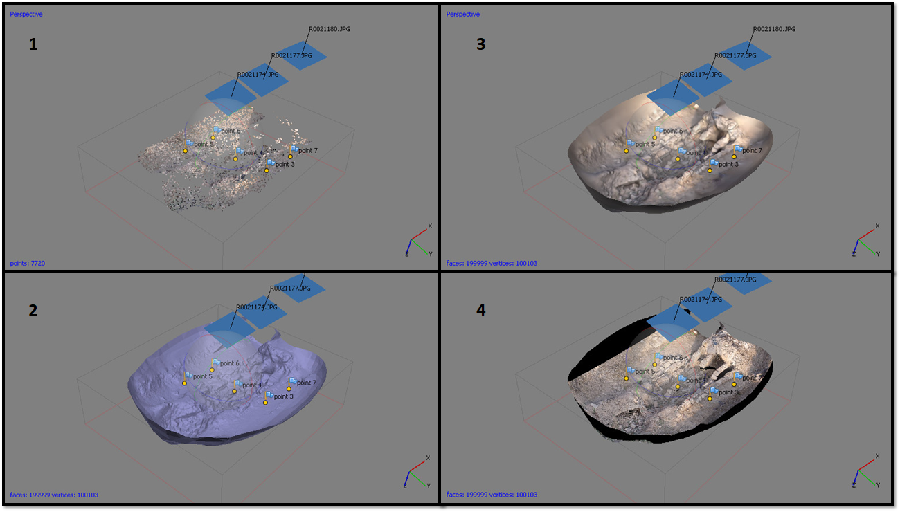
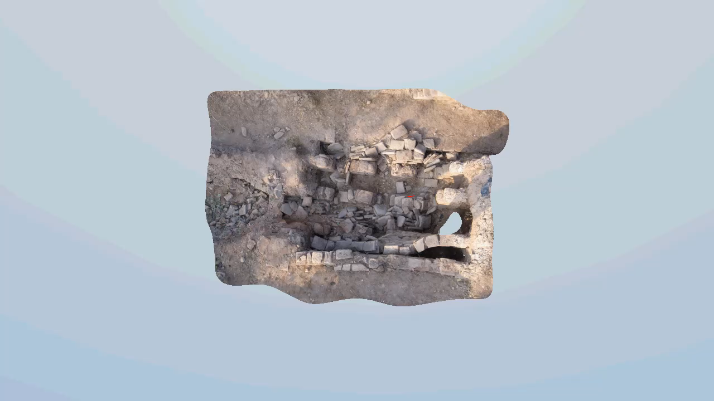
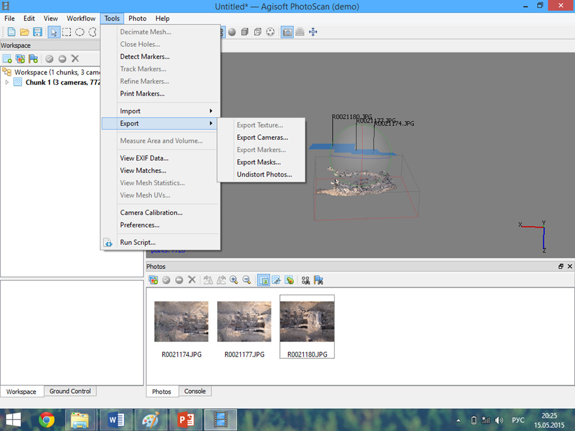
Shuningdek, dasturiy ta'minotning boshqa formatlariga (ArcGIS, Sketch Up ...)
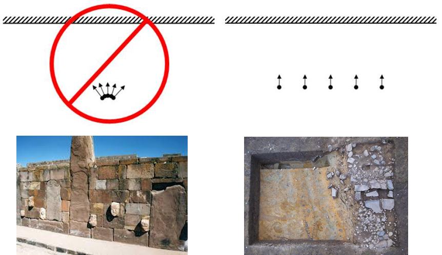
Suratga olish talabi
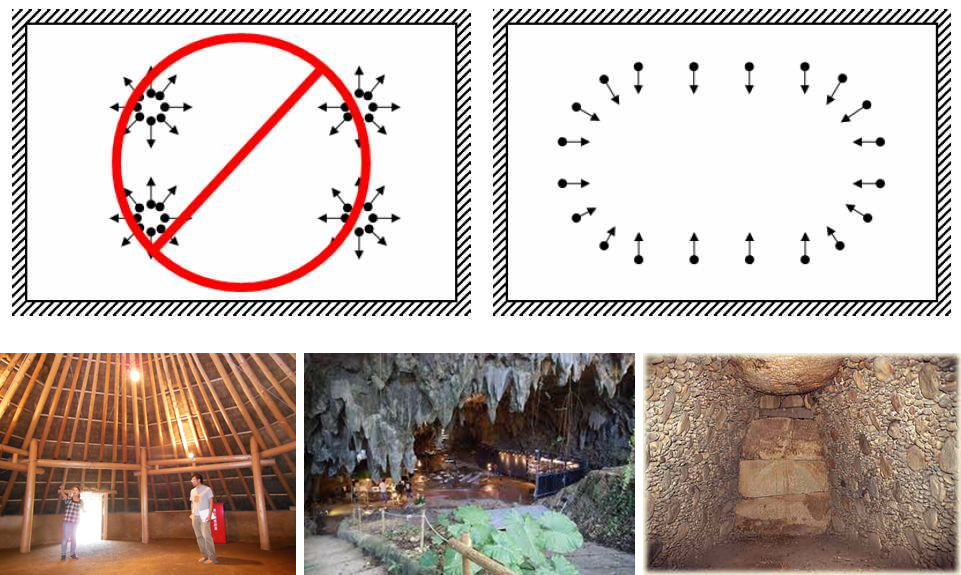
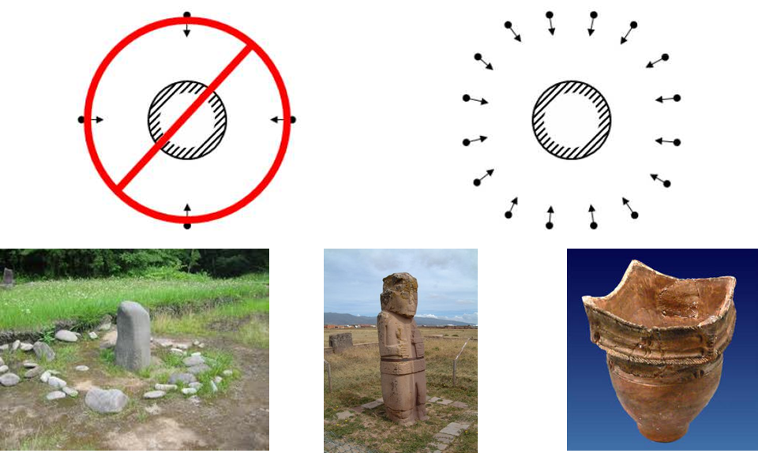
Umumiy ishlash asoslari
1. PhotoScan-ga rasmlar yuklash
2. Yuklangan tasvirlarni tekshirish, keraksiz rasmlarni olib tashlash
3. Rasmlarni taxrirlamoq
4. 3D modelini yaratish
5. 3D modelni tahrirlash
6. Natijalarni eksport qilish
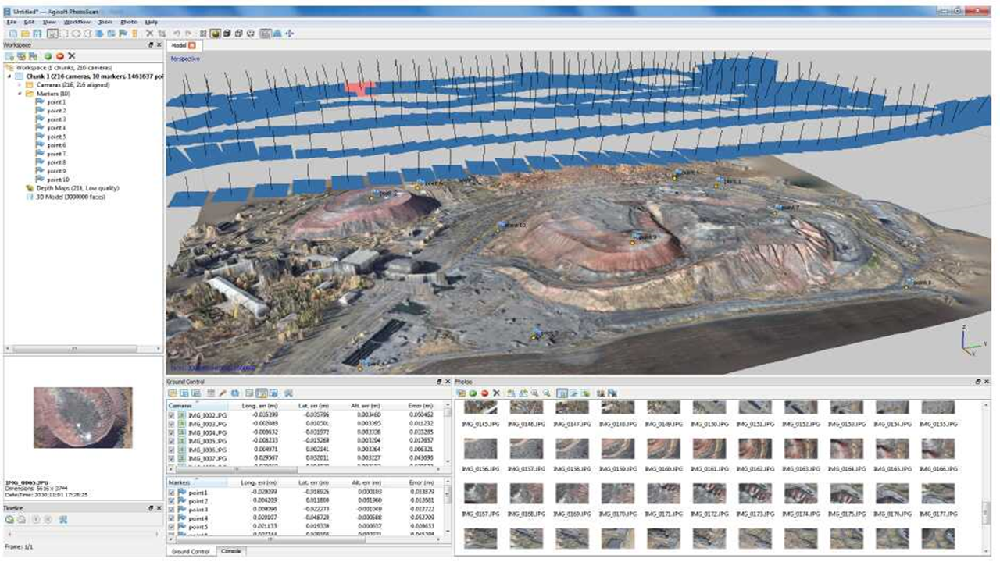